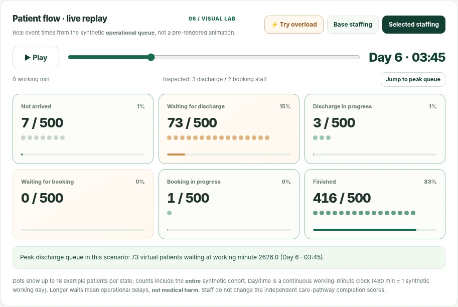

Synthetic patient journeys
Explore fictional care pathways with different access needs and potential barriers.
Healthcare workflows can break under pressure. FAILSAFE uses synthetic patient journeys to reveal bottlenecks, test capacity, and explore better decisions — before making changes in the real world.
A patient's journey involves dozens of handoffs and decisions. A small delay or missed step can put the whole process under pressure.
What if teams could examine those weak points in a safe virtual environment first? FAILSAFE helps explore how a hypothetical care pathway behaves when demand rises, resources tighten, or patients encounter barriers.
Not another dashboard of unexplained numbers. A way to experiment, see the consequences and understand the trade-offs.
Choose patient volume, language or transport barriers, staffing levels and an available resource budget. Everything happens using fictional inputs.
Follow individual synthetic patients, watch queues form, compare staffing plans and replay the busiest moments of a fictional care pathway.
Open the live simulation
A transparent simulation stack rather than a black-box claim about patient outcomes.
Explore fictional care pathways with different access needs and potential barriers.
Model arrivals, simplified service times and limited staffing across two service stages.
Evaluate up to 72 resource combinations and inspect the trade-offs behind each recommendation.
Built for exploration, not medical decisions. FAILSAFE uses simplified, synthetic assumptions. The care-pathway and staffing models are independent, and the optimizer is an exact search algorithm — not a clinically validated AI predictor.
Explore pressure points. Change the assumptions. See what the simulation reveals.
Explore FAILSAFE